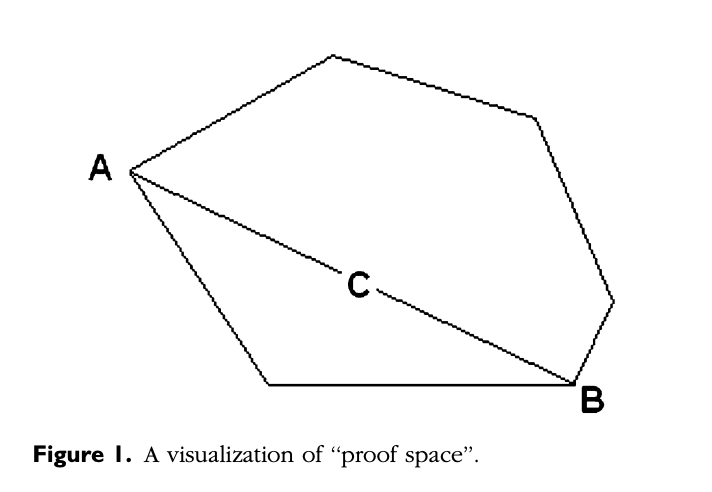
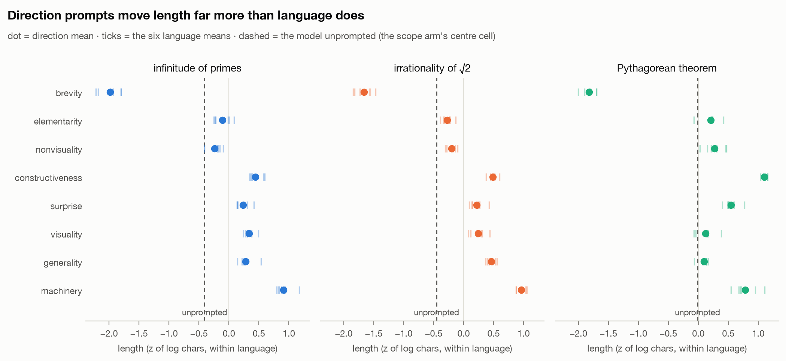
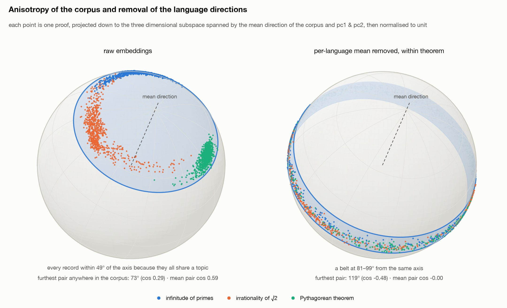
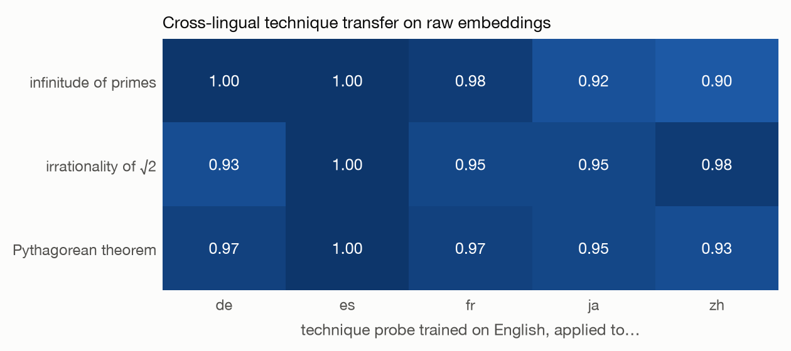
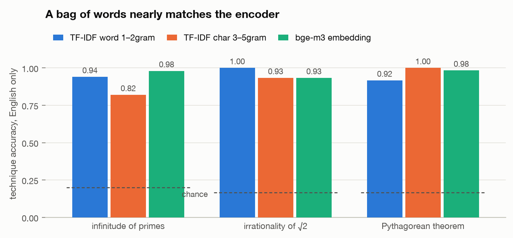
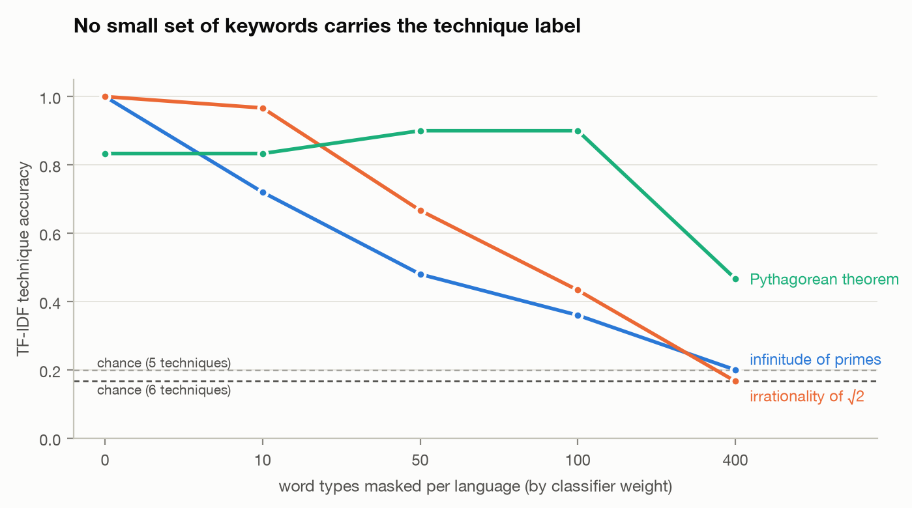
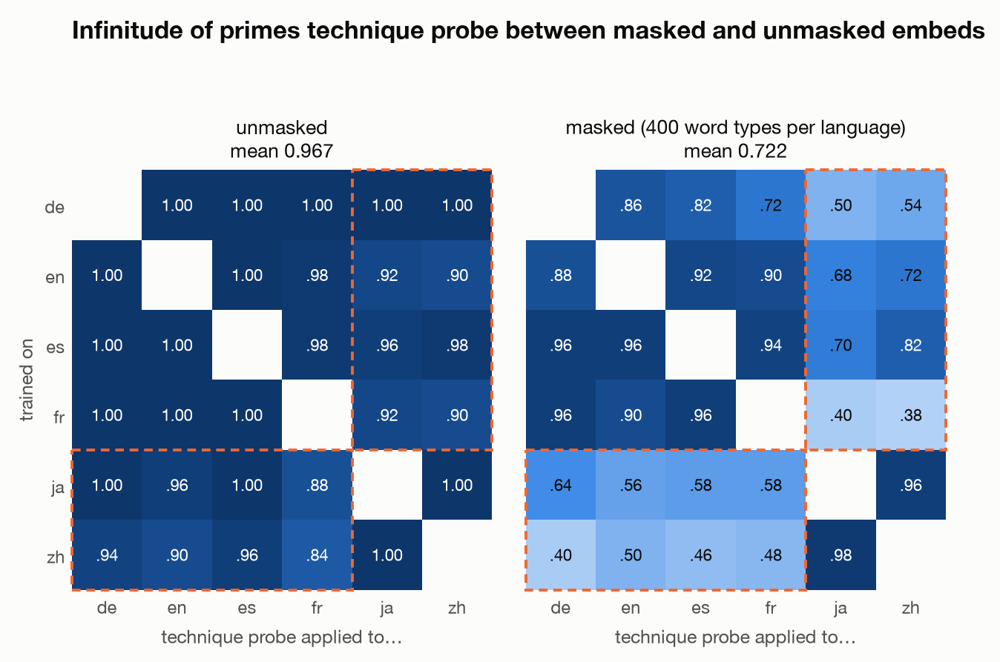
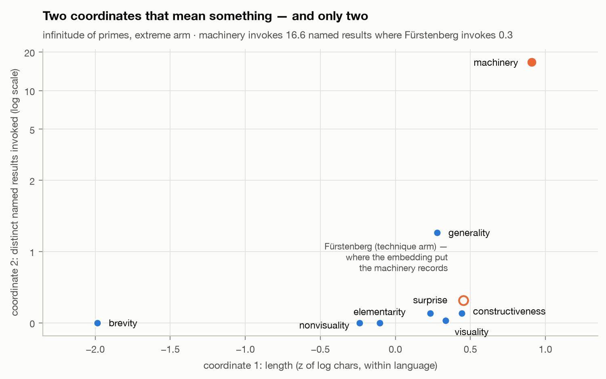

Not all extremal directions are the same kind of thing
Jonathan Keogh
In Extreme Proofs I: The Irrationality of $\sqrt{2}$, John Conway and Joseph Shipman propose treating the proofs of a theorem as points in a space whose coordinates are attributes — brevity, elementarity, generality, visuality, weight of machinery — and singling out the extreme proofs: the vertices, each one maximising a single attribute.Conway & Shipman, Mathematical Intelligencer 35(3), 2013. Every other proof worth reading, they suggest, lives in the convex hull of the extremes. They built their space by hand, from six or seven proofs they knew, and drew it like this:

The question here is whether that construction can be automated: ask a model that is saturated on proof benchmarks to write proofs under prompts that each maximise one attribute, embed the results with a multilingual encoder, and see whether the geometry Conway and Shipman drew by hand appears in the embedding.
The honest version of the question is narrower, and it is the one this project actually answers: does a retrieval-trained multilingual encoder separate arguments as well as it separates topics? An embedder like bge-m3 is trained contrastively on aboutness — queries land near the passages that answer them. A proof’s argument structure might be encoded in that signal. Or it might not, and everything downstream would be measuring wording. The corpus was designed to tell those apart, and the answer, mostly, is the uncomfortable one.
I generated 2,082 proofs of three theorems (infinitude of primes, irrationality of $\sqrt{2}$, Pythagoras) with claude-opus-5: known techniques $\times$ six languages $\times$ two styles, plus prompts asking for one extreme at a time — brevity, generality, heavy machinery — and embedded everything with bge-m3. The direction prompts reliably select which known argument the model writes (Cramér’s $V$ 0.53–0.76, permutation $p < 1/20000$, identical across all six languages). But the embedding itself mostly measures vocabulary and register, not argument: a bag of words matches it, its “orthogonal factor subspaces” fail a ten-second permutation null, and its out-of-set detector gives three incompatible answers on three theorems. The two coordinates that survive every control are not embedding coordinates at all: normalised length, and a count of named external results a proof invokes. Masking the discriminative vocabulary and re-embedding — the experiment the write-up originally left open, run so far on the primes corpus only — lands in the middle: cross-lingual technique transfer drops from 0.97 to 0.72, and the Latin$\leftrightarrow$CJK block falls to 0.56, but nothing reaches chance (0.20).
The corpus
2,082 proofs across three theorems, generated by claude-opus-5 (medium effort, one pinned snapshot throughout) via the Message Batches API. Each record stores its full prompt, model, effort and token usage, so the generation is auditable from the file.
| theorem | total | technique arm | extreme arm | scope arm |
|---|---|---|---|---|
| infinitude of primes | 648 | 300 (5×6×2×5) | 240 (8×6×5) | 108 |
| irrationality of $\sqrt{2}$ | 726 | 360 (6×6×2×5) | 240 | 126 |
| Pythagorean theorem | 708 | 360 (6×6×2×5) | 240 | 108 |
Three arms per theorem:
- Technique arm. Named known proofs (Euclid, Euler product, Fürstenberg, …) $\times$ six languages (en, fr, de, es, zh, ja) $\times$ two styles (terse, verbose) $\times$ five samples. Technique is prescribed, so these carry ground-truth labels.
- Extreme arm. Eight extremal criteria $\times$ six languages $\times$ five samples. No technique is prescribed — the prompt asks for brevity, or elementarity, or “the heaviest machinery you can justify.”
- Scope arm. Proofs of neighbouring statements ($\sqrt{3}$, $\sqrt[3]{2}$, primes $\equiv 2 \pmod{5}$, the law of cosines…) with no criterion at all. Its first cell is the theorem itself, unprompted — the interior point every extreme should be extreme relative to.
Chinese and Japanese are load-bearing. A European-only grid lets shared Latin roots give a multilingual embedding an easy ride; several results below are decided in the CJK columns.
Building the instrument
Before touching the embedding, the crudest possible measurement: character count, log-transformed and z-scored within language (script density is multiplicative — a Chinese proof of the same content runs about $0.57\times$ the length of the English one). Even this blunt ruler shows the design working: direction prompts move length eight to ten times more than the residual language spread within a direction, on all three theorems, and the ordering of directions is the same everywhere.

What the sphere actually looks like
The embedding needs one picture before any numbers, because it explains why half the raw cosines in this article should not be read at face value. bge-m3, like most contrastively trained encoders, is anisotropic on a corpus like this: every record is a mathematical proof, so every record shares a topic, so the whole corpus huddles in a cap on the unit sphere. The cosine floor between any two proofs here — a terse Japanese $\sqrt{2}$ proof against a verbose German counting argument about primes — is about 0.29, and the mean pair sits at 0.59.

Language is additive and removable
Held. Subtracting each language’s mean embedding — one vector per language, estimated within theorem — takes the same-technique/cross-language cosine gap from $+0.012$ (a tie) to $+0.361$, and drops a language probe from 1.000 to 0.013 while technique classification stays at 1.000. The obvious objection is that in-sample centring guarantees the collapse by construction. It does not: estimated leave-one-out, the numbers are identical to three decimals. And the instrument works out of sample — a technique probe trained on five languages and tested on the held-out sixth scores 1.000 / 0.992 / 0.997 on the three theorems.
This replicates Libovický et al. 2020, which I found after building it. I had searched the literature along the framing axis — proof geometry, proof diversity — and found nothing, which was true but useless; the method axis — language subspaces in multilingual encoders — had the answer six years ago. Lesson filed: search the method, not just the framing.
Cross-lingual transfer was the encoder, not the centring
Held. Train the technique probe on English only and apply it frozen to the other five languages, on raw, uncentred embeddings. English and Japanese share no script and no cognate vocabulary, so a direction that separates Euclid from Fürstenberg in both is not riding on English terms.

The “near-orthogonal factor subspaces”
Did not survive its null. The technique, language and style subspaces look near-orthogonal: minimum principal angle $78.9^\circ$ between technique and language. That reads like a finding about the design — independent factors, cleanly separated.
It is not. Permuting the technique labels within each (language, style) cell — keeping the design intact, destroying only the labels — gives a null at $77.0^\circ$, with $p(\text{null} \le \text{observed}) = 0.86$. In 1024 dimensions almost any two low-rank subspaces are nearly orthogonal. The angle measures the dimensionality, not the design. The null took ten seconds to write and killed the headline.
“Technique structure survives translation”
Did not survive its baseline. Here is the number that reframed the whole project. Within English only, holding style out (train on terse records, test on verbose, so no grid cell appears on both sides): can TF-IDF alone recover which technique a proof is?

That result is consistent with the encoder reading arguments and with it reading only vocabulary — a proof of Euclid’s argument will contain Euclid’s words no matter how deeply anything understands it. Separating those two readings needs an intervention, not another correlation.
Taking the vocabulary away
So: rewrite the corpus with the give-away terms replaced by a single neutral placeholder, and ask the same questions again. Two ways of choosing what to remove, with opposite results.
Named machinery is not the give-away. Masking every entry in a hand-built registry of named results, every mathematician’s surname in six languages, and every technique-diagnostic symbol moves the lexical baseline by nothing: 1.000 before, 1.000 after. Whatever identifies a technique, it is not the citations.
It is the ordinary descriptive vocabulary, and it is diffuse. Selecting terms by classifier weight instead (chosen on terse records, tested on verbose, so the selection never sees the test side) produces a slope, not a cliff: it takes roughly 400 masked word types per language before a bag of words hits chance on primes and $\sqrt{2}$ — and about 60% of the text is still on the page when it does. The terms doing the work are squarefree, contradicting, distributivity, contrapositive — ordinary technical prose, not proper nouns.

One check on the masking itself: every masked term becomes the same placeholder, so the corpus does not record which term was removed, and classifying technique from what a reader of the masked text can see — placeholder count, length, density — sits exactly at chance. An earlier version of this check reported a leak of 0.90; it was classifying from its own mask log rather than from the proofs. The distinction between “the mask leaks” and “the check reads its own bookkeeping” cost an afternoon and was worth it.
Does the encoder survive where the bag of words died?
The open question, measured once. This was the experiment the first version of this write-up flagged as not yet run: embed the masked corpus — the one on which TF-IDF is at chance — and ask whether bge-m3 still recovers the technique across languages. If it holds, something beyond the masked vocabulary is represented. If it falls to chance with the words, every technique result above is a lexical artefact and Figure 3 was proper-noun alignment.
The answer is genuinely in the middle, and more informative than either clean outcome. One honest framing note before the figure: this is a single experiment — one theorem (primes), one masked tier (400 word types per language), embedded once. The three-theorem replication that backs every other figure in this article does not yet back this one.

Three things follow. First, the technique geometry is not purely lexical: on a corpus where a bag of words is at chance, every one of the thirty transfer directions stays above it, most by a wide margin, and within the Latin family transfer barely moves (es$\to$de still 0.96). Second, a large share of the cross-script transfer in Figure 3 was riding on exactly the vocabulary the mask removed — the Latin$\leftrightarrow$CJK block drops by 0.38, and French$\to$Chinese collapses to 0.38. The claim “the encoder represents arguments language-independently” has to be weakened to “the encoder represents something beyond the top-400 discriminative word types, but its cross-script alignment leans on shared technical vocabulary.” Third, the one masked cell that stays near-perfect is Japanese$\leftrightarrow$Chinese (0.96–0.98): the two languages that share han characters keep their alignment after the per-language masks, which is exactly where a vocabulary-bridge account predicts the survival.
Sampling the vertices
Each extremal direction selects a known argument
Held, on all three theorems. The extreme arm carries no technique label — the prompt asks for a property, not a proof. Classify each record against the technique-arm centroids and ask: does the direction prompt change which known argument the model reaches for?

The mapping is essentially identical in all six languages — on primes, four of eight directions select the same technique 5/5 in every language — which is what makes it a property of the direction rather than residual language leakage. And the mapping itself is where the theorems diverge, which is the result the title is about:
- Primes: four different directions — brevity, elementarity, nonvisuality, constructiveness — all collapse onto Euclid (30/30, 30/30, 30/30, 23/30). Generality selects the Euler product 30/30; surprise selects Fürstenberg 28/30.
- $\sqrt{2}$: much flatter. Visuality, the axis that died on primes for want of more than one visual proof, was predicted in advance to split here between the two geometric arguments the article itself distinguishes — and it does: covering 16/30, folding 14/30.
- Pythagoras: the sharpest mapping, and the cleanest demonstration that these are not independent coordinates: machinery and nonvisuality both land on the inner-product proof 30/30. On this theorem, “use the heaviest machinery” and “avoid all pictures” are the same instruction.
The out-of-set threshold measures register, not scope
Misleading, caught by replication. Nearest-centroid must return something, so the analysis calibrates an out-of-set threshold: the 5th percentile of technique-arm records’ cosine to their own centroid, leave-one-out. On primes this reads as though six of eight directions leave the known set of arguments entirely. That would have been the headline — the model inventing off-hull proofs on demand.
The other two theorems kill it. On $\sqrt{2}$, everything is out-of-set by this measure, including brevity, which on primes was 0/30. On Pythagoras almost nothing is. The same measurement on three corpora built the same way gives three incompatible pictures — and reading twelve of the flagged primes proofs by hand had already shown what it actually detects: a formal, hedged, encyclopedic register that moves a record in embedding space without changing its mathematics. Only machinery genuinely leaves the reference set.
The scope test tracks the mathematics
Held. The scope arm asks for proofs of neighbouring statements and classifies them against the centroids, which none of them touched during estimation. Where the mathematics forces a change of argument, the model changes argument: for primes $\equiv 2 \pmod{5}$ — where Murty’s 1988 result says no Euclidean proof existsA Euclidean proof exists for $a \bmod q$ exactly when $a^2 \equiv 1 \pmod{q}$. Since $4 \not\equiv 1 \pmod{5}$, none exists for primes $\equiv 2 \pmod{5}$. — the records land on the Euler-product centroid 15/18, while for primes $\equiv 3 \pmod{4}$, where Euclid’s argument adapts directly, they stay Euclid 17/18. And the two scope targets that are secretly the same statement as a known technique — the parallelogram law and the inner-product form of Pythagoras — are the only scope targets anywhere that land inside the reference set, both 18/18 on the inner-product centroid at cosine 0.63.
One known failing check, stated rather than patched: language means estimated on the technique arm do not fully remove language from the extreme arm (a language probe on the centred extreme arm sits at 0.43 against chance 0.17 on primes). The extreme-arm result therefore rests on the per-language replication in Figure 7’s mapping, not on clean out-of-sample language removal.
A coordinate that is not wording
Everything above measures a proof by where its wording lands, and that produced the project’s central error. The embedding assigned 22/30 machinery records to the Fürstenberg centroid — because Fürstenberg’s proof has the most abstract vocabulary in the reference set, while its mathematics is Euclid’s argument in topological dress, invoking no external theorem at all. A similarity measure cannot tell “uses abstract terminology” from “uses powerful theorems.”
So count the second thing directly: the number of distinct named external results a proof invokes, matched from a registry in all six languages.

machinery invokes 16.6 distinct named results on average; Fürstenberg — where the embedding filed those records — invokes 0.3. A single threshold ($\ge 2$ invoked results) separates them at accuracy 1.000 where the embedding cosine managed 0.13.The control that matters is length: quoting theorems takes words, and the count correlates with length at Spearman $+0.59$. So compare machinery against the longest 30 technique-arm records instead of all of them: those are longer than the machinery proofs (length $z$ $+1.45$ vs $+0.91$) and invoke 1.40 results against machinery’s 16.63. At equal or greater length, a twelfth of the dependence. It is not length wearing a hat. The measure is also script-independent — median CJK/Latin ratio 0.84 — which is not obvious for a name-matching instrument.
The honest limitation: this coordinate has almost no resolution outside the one distinction it was built to make. Seven of eight directions sit at 0.00–0.13 invoked results. It decisively separates heavy machinery from abstract vocabulary, and orders nothing else.
Where that leaves the geometry: brevity and elementarity separate on length and coincide at zero dependence — the same argument at different lengths, which is what reading the proofs suggests. constructiveness and generality sit at nearly the same length and are $10\times$ apart in dependence. Two coordinates that mean something is the minimum for Conway and Shipman’s geometric framing to be worth taking literally. On this evidence it is also the maximum: the extremal directions are not axes of one space. Three of them select among known arguments, one leaves the known set entirely, and one only re-renders an argument you already had.
What I got wrong
Four things, each caught by a check that took under a minute to write:
- Near-orthogonal subspaces as a claim about the design — the permuted null sits at the same angle ($p = 0.86$). It measures the dimension.
- “Technique structure survives translation” as a claim about argument structure — a bag of words matches the encoder within English, and the masking ablation shows the cross-script part of the transfer leaning on vocabulary.
- “Most directions leave the reference set” — the threshold measures register; the three-theorem comparison makes that quantitative.
- The machinery/Fürstenberg conflation — the embedding merged the arm with the heaviest tools into the technique with the most abstract words. Only a non-lexical coordinate separates them.
The nulls and baselines are the point of the project as much as the findings are. Each one cost seconds and each one killed a headline I would otherwise have shipped.
Limitations
- The clouds interpenetrate. Within-technique spread is as large as between-centroid distance for all but the top technique on each theorem. The analysis ranks centroids; it fits no hull.
- One generator, one encoder. Everything here is a fact about
claude-opus-5’s organisation of proof-writing as seen bybge-m3, not a fact about proofs. The replication across three theorems does not replicate across models. - Proof correctness is unverified beyond twelve records read by hand. On Pythagoras this is live: the famous circular proof derives the theorem from $\sin^2+\cos^2=1$, which is the theorem, and nothing in the pipeline would notice.
- Two direction prompts had to be adapted across theorems (elementarity, constructiveness), so five of the eight directions are comparable across all three theorems, one across two, one not at all.
- Registry coverage. The $\sqrt{2}$ and Pythagoras registries were built from the literature rather than validated against their corpora, and the code prints a PROVISIONAL banner for them. The scale of the risk if a registry is wrong: the $\sqrt{2}$ registry run against the primes corpus reports 0.85 invoked results where the right one reports 16.63 — a recall failure that reads exactly like a null result.
What would come next
A second generator is now the single point of failure: the interesting claim — that the extremal directions decompose the same way regardless of what is being proved — has three theorems behind it and one model. Everything after generation runs on cached files in about two minutes, so the cost is one batch job. Beyond that: derive the $\sqrt{2}$ and Pythagoras registries from their corpora the way the primes one was, and push the masking ablation to the other two theorems — the Latin$\leftrightarrow$CJK collapse in Figure 6 is one corpus’s answer and deserves its own replication.